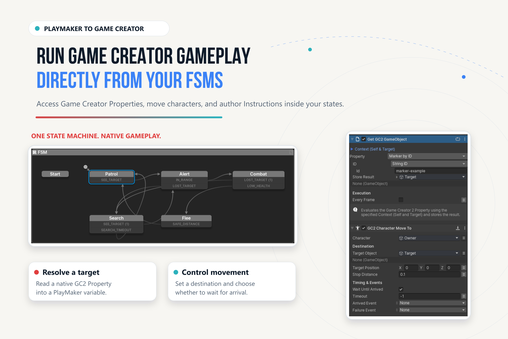

PlayMaker → GC2 Reference#
Find these actions in the PlayMaker Action Browser under Game Creator 2. They execute native GC2 gameplay, evaluate authored Conditions and Properties, and perform explicit variable or Signal operations.
Execution and Ownership#
| Action | Category | Purpose |
|---|---|---|
Run GC2 Actions |
Game Creator 2/Core |
Execute a referenced native GC2 Actions component. |
Run GC2 Instructions |
Game Creator 2/Core |
Author and run inline GC2 Instructions inside the action. |
For Run GC2 Actions, assign the Actions component and configure Self/Invoker and Target. Self defaults to the FSM owner; Target defaults to the referenced Actions object's owner. Inline Instructions use Gc2Context, whose default Target is None.
| Setting | Behavior |
|---|---|
| Wait Until Complete on | Observe the exact task before finishing this action. |
| Wait Until Complete off | Finish immediately; GC2 continues independently. |
| If Already Running: Reject | Leave the existing run unchanged and send optional Busy Event. |
| If Already Running: Join | Wait without owning, restarting, or changing its Args. Requires waiting. |
| Cancel Owned Run On State Exit | Request cooperative cancellation for a waiting run started by this invocation. |
| Completed Event | Normal terminal handling of a waited run. |
| Busy Event | Reject found an active run. |
| Failure Event | Missing/destroyed references or invalid explicit context. |
Joined and detached runs are never canceled by this action's state exit. Cancellation of an owned run is cooperative and may take effect only at an Instruction boundary.

Conditions#
| Action | When it evaluates | Normal outcome |
|---|---|---|
Check GC2 Conditions |
Once on state entry | Store Result; True Event or False Event. |
Wait Until GC2 Conditions |
At the polling interval | Success when Conditions become true. |
Wait While GC2 Conditions |
At the polling interval | Complete when Conditions become false. |
Author Conditions inline with GC2's native editor. Configure Context so Self and Target resolve correctly.
An evaluation error is distinct from false. Failure Event handles invalid context or evaluation failure; it must not be treated as normal false completion. Wait actions also expose timeout handling. Choose Scaled or Unscaled timing deliberately and consult the selected field's tooltip: timeout conventions differ between families.
Variables and Lists#
Get GC2 Name Variable and Set GC2 Name Variable live under Game Creator 2/Variables. Select Local or Global scope, owner/store, exact name or path, and value type. Direct transfers support Bool, Number through PlayMaker Float, String, and GameObject.
List actions cover count, get, add, set, insert, remove, remove-at, contains, index-of, and clear for Local or Global List Variables. See Variables & Property Binder for conversions and failures.
Native Properties#
The typed GC2 property evaluation actions sample a native PropertyGet* into a PlayMaker variable. Families include Bool, Float, String, GameObject, Vector3, Color, Quaternion, Texture, Sprite, and Material.
Evaluate once on entry unless Every Frame is intentional. A dynamic property can depend on Self/Target, so a correct selection with incorrect Context can still produce the wrong result.
Signals#
Emit GC2 Signal sends a native Signal with an Invoker. Wait for GC2 Signal listens while active; configure its identifier, received event, timeout, and stored invoker. It unsubscribes on state exit.
See Events & Signals for routing and identity.
Core Gameplay Families#
| Family | Operations |
|---|---|
| Characters | Move to target/position, stop, teleport, speed. |
| Camera and audio | Change shot, shake, play, stop. |
| Save profiles | Save, load, delete, existence, current profile. |
| Objects and interactions | Pool/despawn; invoke or enable interactions. |
| Numeric variables | Get, set, change, clamp. |
Use the Action Palette to find the exact installed action and inspect its field tooltips. GC2 retains gameplay and save ownership. For module-specific wrappers, see Optional Modules.